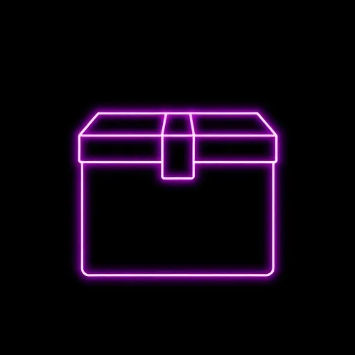

The DevOps Toolchain
Map the right tools to every stage of the software delivery lifecycle — from source control to monitoring, security to collaboration.
Learning Objectives
- Map the DevOps lifecycle stages and identify which tool categories serve each phase
- Compare source control platforms: GitHub, GitLab, Bitbucket, Azure DevOps
- Evaluate CI/CD systems: Jenkins, GitHub Actions, GitLab CI, CircleCI, Travis CI
- Distinguish container runtimes: Docker, Podman, containerd
- Explain orchestration platforms: Kubernetes, Docker Swarm, Nomad
- Compare Infrastructure as Code tools: Terraform, Pulumi, CloudFormation, Ansible
- Identify monitoring and observability stacks for production systems
- Understand configuration management, artifact repositories, and DevSecOps scanning
- Apply a decision framework for selecting tools without creating sprawl
1. The DevOps Toolchain Overview
A DevOps toolchain is the collection of tools that a team uses across every phase of the software delivery lifecycle. There is no single "DevOps tool" — you assemble a chain of specialized tools, each handling one stage of the pipeline. The tools you select determine how fast you ship, how reliably you operate, and how quickly you recover from failure.
The lifecycle is continuous — a loop, not a line. Code flows from planning through development, testing, deployment, operations, and monitoring, then feedback loops back into planning. Every link in the chain must integrate with the others. A CI server that cannot talk to your container registry is a broken link.
Interactive Lifecycle Wheel
Click any stage to see the tools that power it.

ReleaseThe best toolchain is not the one with the most tools — it is the one where every tool integrates seamlessly with the others. A smaller, well-integrated stack will always outperform a bloated collection of disconnected point solutions.
2. Source Control
Source control is the foundation of every DevOps pipeline. Without it, nothing else works. Git is the dominant version control system — used by over 94% of professional developers. The real decision is which hosting platform you build your workflow around, since each platform adds collaboration features, code review, and CI/CD integration on top of the Git protocol.
Platform Comparison
| Platform | Hosting | Built-in CI/CD | Best For | Key Differentiator |
|---|---|---|---|---|
| GitHub | Cloud + Enterprise Server | GitHub Actions | Open source, community, ecosystem | Largest community, Copilot AI, 20K+ Actions marketplace |
| GitLab | Cloud + self-managed | GitLab CI/CD | All-in-one platform, self-hosting | Single platform: SCM + CI + registry + security scanning |
| Bitbucket | Cloud + Data Center | Bitbucket Pipelines | Atlassian shops (Jira, Confluence) | Deep Jira integration, branch-to-issue linking |
| Azure DevOps | Cloud + Server | Azure Pipelines | Microsoft/.NET enterprises | Active Directory auth, Azure-native, TFVC fallback |
Git is the version control tool — a command-line program you install locally. GitHub is a hosting service for Git repositories with a web interface and collaboration features. Knowing Git is mandatory. Which platform hosts your repos is an organizational decision.
3. CI/CD Pipelines
Continuous Integration (CI) means merging all developer working copies to a shared mainline frequently — ideally multiple times a day. Every merge triggers an automated build and test run. Continuous Delivery/Deployment (CD) extends this: every change that passes CI is automatically deployed to staging (delivery) or production (deployment).
How a Pipeline Works
CI/CD Platform Comparison
| Platform | Config Format | Hosting | Strengths | Watch Out For |
|---|---|---|---|---|
| Jenkins | Jenkinsfile (Groovy) |
Self-hosted only | 1,800+ plugins, full control, mature | Plugin sprawl, maintenance burden |
| GitHub Actions | .github/workflows/*.yml |
Cloud + self-hosted runners | Native GitHub integration, marketplace | Vendor lock-in, minute limits on free tier |
| GitLab CI | .gitlab-ci.yml |
Cloud + self-managed | Single platform, built-in scanning | Complex YAML for advanced pipelines |
| CircleCI | .circleci/config.yml |
Cloud + server | Fast caching, orbs (reusable config) | Pricing scales quickly at volume |
| Travis CI | .travis.yml |
Cloud | Simple setup, strong open-source history | Declining market share, limited free tier |
# .github/workflows/ci.yml
name: CI Pipeline
on: [push, pull_request]
jobs:
build-and-test:
runs-on: ubuntu-latest
steps:
- uses: actions/checkout@v4
- uses: actions/setup-node@v4
with:
node-version: '20'
- run: npm ci
- run: npm test
- run: npm run buildYour first CI/CD tool should be whichever one is native to your source control platform. Using GitHub? Start with Actions. Using GitLab? GitLab CI is already there. Avoid adding a third-party CI system unless your platform's built-in tool cannot meet a specific need.
4. Containerization
Containers package an application with all its dependencies — libraries, runtime, system tools — into a single, portable unit. "It works on my machine" stops being a problem because the container is the machine. Containers are lighter than virtual machines because they share the host OS kernel instead of running a separate OS.
Container Runtime Comparison
| Runtime | Type | Daemon | Root Required | Best For |
|---|---|---|---|---|
| Docker | Full platform (build + run) | Yes (dockerd) |
Default yes, rootless available | Development, learning, industry standard |
| Podman | Full platform (build + run) | No (daemonless) | No (rootless by default) | Security-sensitive environments, RHEL/Fedora |
| containerd | Low-level CRI runtime | Yes | Yes | Kubernetes node runtime, production clusters |
# Multi-stage build for a Node.js application
FROM node:20-alpine AS builder
WORKDIR /app
COPY package*.json ./
RUN npm ci --only=production
COPY . .
RUN npm run build
FROM node:20-alpine
WORKDIR /app
COPY --from=builder /app/dist ./dist
COPY --from=builder /app/node_modules ./node_modules
EXPOSE 3000
CMD ["node", "dist/server.js"]Podman is a drop-in replacement for Docker in most cases — you can even alias docker=podman. The key difference: Podman runs without a daemon and without root privileges by default, making it more secure. Many enterprises in government and finance are adopting Podman for this reason.
5. Orchestration
Running one container on a laptop is simple. Running hundreds of containers across dozens of servers in production — with automatic scaling, health checks, rolling updates, and self-healing — requires an orchestrator. Orchestration platforms manage the lifecycle of containers at scale.
Orchestration Platform Comparison
| Platform | Complexity | Scaling | Ecosystem | Best For |
|---|---|---|---|---|
| Kubernetes (K8s) | High (steep learning curve) | Horizontal + vertical, HPA | Massive (CNCF, Helm, operators) | Large-scale production, microservices |
| Docker Swarm | Low (built into Docker) | Basic horizontal scaling | Minimal | Small teams, simple deployments |
| Nomad | Medium | Horizontal, multi-region | HashiCorp (Vault, Consul) | Mixed workloads (containers + VMs + batch) |
Kubernetes Core Concepts
If you are running fewer than 10 services, Docker Compose or a simple PaaS (Heroku, Railway, Fly.io) may be a better fit. Kubernetes shines when you have dozens of microservices, need multi-cloud portability, or require advanced auto-scaling. Do not adopt it just because it is popular.
6. Infrastructure as Code
Infrastructure as Code (IaC) means managing servers, networks, databases, and cloud resources through version-controlled configuration files instead of manual processes. You define what you want, commit it to source control, and the tool builds it. Changes are tracked, reviewed, and reproducible — the same way you manage application code.
IaC Tool Comparison
| Tool | Language | Approach | Cloud Support | State Management |
|---|---|---|---|---|
| Terraform | HCL (HashiCorp Config Language) | Declarative | Multi-cloud (3,000+ providers) | State file (local or remote backend) |
| Pulumi | Python, TypeScript, Go, C# | Imperative (real code) | Multi-cloud | Pulumi Cloud or self-managed |
| CloudFormation | JSON / YAML | Declarative | AWS only | Managed by AWS (stacks) |
| Ansible | YAML (playbooks) | Procedural (idempotent) | Multi-cloud + on-prem | Stateless (no state file) |
# main.tf - Provision an AWS EC2 instance
provider "aws" {
region = "us-east-1"
}
resource "aws_instance" "web" {
ami = "ami-0c55b159cbfafe1f0"
instance_type = "t3.micro"
tags = {
Name = "web-server"
Env = "production"
}
}Declarative (Terraform, CloudFormation): you describe the desired end state and the tool figures out what to create, modify, or destroy. Procedural (Ansible playbooks): you describe the steps to reach the state. Declarative is safer for infrastructure — it prevents drift and handles dependencies automatically.
7. Monitoring & Observability
Monitoring tells you when something breaks. Observability tells you why. Modern observability rests on three pillars: metrics (numeric measurements over time), logs (discrete events), and traces (request paths through distributed systems).
The Three Pillars
Monitoring Stack Comparison
| Tool / Stack | Pillar | Hosting | Strengths |
|---|---|---|---|
| Prometheus + Grafana | Metrics + visualization | Self-hosted or Grafana Cloud | Open source, pull-based, PromQL, Kubernetes-native |
| ELK Stack | Logs + search | Self-hosted or Elastic Cloud | Full-text search, Kibana dashboards, mature ecosystem |
| Datadog | All-in-one (metrics, logs, traces) | Cloud SaaS | Unified platform, 750+ integrations, low setup overhead |
| New Relic | All-in-one (APM, infra, logs) | Cloud SaaS | Generous free tier (100 GB/mo), NRQL query language |
| Grafana Loki | Logs | Self-hosted or Cloud | Label-indexed logs designed to pair with Prometheus/Grafana |
Prometheus + Grafana + Loki give you a full observability stack for free — but you manage the infrastructure. Datadog and New Relic cost money but eliminate operational burden. For learning and small teams, start with the open-source stack. For production at scale, evaluate total cost including engineering time spent maintaining self-hosted tools.
8. Configuration Management
Configuration management tools ensure that every server in your fleet is configured identically and stays that way. They enforce a desired state: if someone manually changes a config file on a server, the tool detects the drift and corrects it automatically.
CM Tool Comparison
| Tool | Language | Architecture | Agent Required | Learning Curve |
|---|---|---|---|---|
| Ansible | YAML (playbooks) | Agentless (SSH push) | No | Low — YAML is readable by anyone |
| Chef | Ruby (recipes/cookbooks) | Agent-based (pull) | Yes (chef-client) |
High — requires Ruby knowledge |
| Puppet | Puppet DSL (manifests) | Agent-based (pull) | Yes (puppet agent) |
Medium — custom DSL to learn |
| Salt (SaltStack) | YAML (states) | Agent or agentless | Optional (salt-minion) |
Medium — powerful event system |
# playbook.yml - Install and configure nginx
- hosts: webservers
become: true
tasks:
- name: Install nginx
apt:
name: nginx
state: present
update_cache: true
- name: Start and enable nginx
service:
name: nginx
state: started
enabled: trueAnsible won the configuration management war because it requires no agents on target machines — just SSH access. Zero setup on managed nodes, no daemon to maintain, no certificate infrastructure. For new projects, Ansible is the default choice unless you have a specific reason to choose otherwise.
9. Artifact Management
An artifact repository is a versioned storage system for build outputs: container images, JAR files, npm packages, Helm charts, binaries. It sits between your CI pipeline (which produces artifacts) and your deployment pipeline (which consumes them). Without one, you are rebuilding from source on every deployment — slow, unreproducible, and wasteful.
Artifact Repository Comparison
| Tool | Supported Formats | Hosting | Best For |
|---|---|---|---|
| JFrog Artifactory | 30+ types (Docker, npm, Maven, PyPI, Helm) | Cloud + self-hosted | Enterprise, multi-format, universal repository |
| Sonatype Nexus | Docker, Maven, npm, PyPI, NuGet, Helm | Cloud + self-hosted | Java/Maven ecosystem, open-source option (Nexus OSS) |
| GitHub Packages | Docker, npm, Maven, NuGet, RubyGems | Cloud (GitHub-hosted) | Teams on GitHub, tight CI integration |
| Docker Hub | Container images only | Cloud | Public images, open-source projects |
| Cloud-native (ECR, ACR, GAR) | Container images, Helm charts | AWS / Azure / GCP | Teams committed to a single cloud provider |
A versioned artifact should be immutable — once pushed, never overwritten. Use content-addressable tags (git SHA, build number) rather than mutable tags like latest. Mutable tags make rollbacks unreliable and deployments non-deterministic.
10. Security (DevSecOps)
DevSecOps means shifting security left — integrating security checks into every stage of the pipeline instead of treating it as a gate at the end. Every commit can be scanned for vulnerabilities, every container image checked for known CVEs, every dependency audited before it reaches production.
Security Scanning Categories
DevSecOps Tool Comparison
| Tool | Scan Type | Pricing | CI Integration |
|---|---|---|---|
| SonarQube | SAST (code quality + security) | Community (free), Enterprise (paid) | Jenkins, GitHub Actions, GitLab CI |
| Snyk | SCA + container + IaC | Free tier, Team/Enterprise | Native integrations with all major platforms |
| Trivy | Container + filesystem + IaC + SBOM | Free (open source, Aqua Security) | CLI-based, fits any pipeline |
| OWASP ZAP | DAST (web app scanning) | Free (open source) | Docker-based, GitHub Actions action |
# Scan a container image for vulnerabilities
$ trivy image --severity HIGH,CRITICAL myapp:latest
myapp:latest (alpine 3.18.4)
Total: 2 (HIGH: 1, CRITICAL: 1)
+---------+------------------+----------+---------------+
| LIBRARY | VULNERABILITY | SEVERITY | FIXED VERSION |
+---------+------------------+----------+---------------+
| libcurl | CVE-2024-12345 | CRITICAL | 8.5.0-r1 |
| openssl | CVE-2024-67890 | HIGH | 3.1.4-r2 |
+---------+------------------+----------+---------------+Start with two free tools that catch the highest-impact issues: Trivy for container and dependency scanning, and GitLeaks for secrets detection. Add them as CI pipeline steps so they run on every pull request. Add SAST and DAST later as your security posture matures.
11. Collaboration
DevOps is a culture, not just a set of tools — but the right collaboration tools amplify that culture. Teams need to communicate in real time, track work, document decisions, and respond to incidents quickly.
Collaboration Stack
| Category | Tool | Purpose | Key Integration |
|---|---|---|---|
| Chat | Slack / Microsoft Teams | Real-time communication, ChatOps | CI/CD alerts, deploy notifications, bot commands |
| Project Tracking | Jira / Linear / GitHub Issues | Issue tracking, sprint planning, backlog | Branch creation, PR linking, auto-close on merge |
| Documentation | Confluence / Notion / GitBook | Runbooks, architecture docs, postmortems | Search, templates, version history |
| Incident Response | PagerDuty / Opsgenie / Incident.io | On-call scheduling, alerting, escalation | Monitoring alerts, status pages, postmortems |
ChatOps means running operational commands directly from your chat tool. Instead of SSH-ing into a server, you type /deploy production v1.5.0 in Slack. Everyone on the team sees what happened, when, and who triggered it — creating an automatic audit trail and reducing the blast radius of human error.
12. Choosing Your Stack
With hundreds of DevOps tools available, the biggest risk is not choosing the wrong one — it is adopting too many. Tool sprawl creates maintenance burden, cognitive overhead, and integration complexity. The goal is the minimum viable toolchain that solves your actual problems.
Decision Framework
Start Small PRINCIPLEBegin with source control + CI/CD + a deployment target. That is three tools. Ship software first, optimize later.
Prefer Built-in PRINCIPLEUse what your platform already provides before adding external tools. GitHub has Actions, Packages, Issues, and scanning built in.
Evaluate Total Cost PRINCIPLEA "free" self-hosted tool that takes 20 hours/month to maintain is not free. Factor in engineering time, not just license fees.
Integration First PRINCIPLEThe best tool that does not integrate with your stack is worse than a good tool that does. Check for native integrations before committing.
Team Skill Match PRINCIPLEChoose tools your team can actually use. Kubernetes is powerful but if nobody has K8s experience, you are creating a bottleneck.
Avoid Lock-in PRINCIPLEPrefer tools with open standards (OCI images, OpenTelemetry, Terraform HCL) so you can switch providers without rewriting everything.
Starter Stacks by Team Size
| Team Size | Source Control | CI/CD | Deploy Target | Monitoring |
|---|---|---|---|---|
| Solo / 1-3 | GitHub | GitHub Actions | Vercel / Railway / Fly.io | Uptime Kuma + logs |
| Small / 4-10 | GitHub or GitLab | GitHub Actions or GitLab CI | Docker Compose on VPS or K3s | Prometheus + Grafana |
| Medium / 10-50 | GitHub or GitLab (self-managed) | GitLab CI or Jenkins | Kubernetes (EKS/GKE/AKS) | Datadog or Prometheus + Grafana + Loki |
| Enterprise / 50+ | GitHub Enterprise or GitLab Ultimate | Jenkins + ArgoCD (GitOps) | Multi-cluster K8s | Full stack: metrics + logs + traces + APM |
A common anti-pattern: the team adopts Jenkins for CI, GitHub Actions for simple workflows, ArgoCD for deployments, Terraform for AWS, Pulumi for GCP, Ansible for config, Chef for legacy servers, and three monitoring solutions. Every tool has a maintenance cost. Before adding a new tool, ask: "Can something we already use do this well enough?"
The DevOps toolchain is not about mastering every tool — it is about understanding the categories, what each category solves, and how to select the right tool for your team's size, skills, and constraints. Start simple, integrate tightly, and add complexity only when you have a real problem that demands it.
Finished reviewing this module?